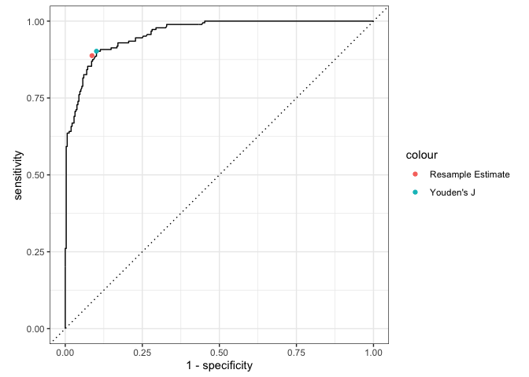

The goal of thresholdr is to estimate optimal probability thresholds for determining classifications when the true state is unknown, such as when using diagnostic classification models.
Installation
You can install the development version of thresholdr like so:
# install.packages("remotes")
remotes::install_github("r-dcm/thresholdr")Example usage
There the true classifications are known, we can determine the optimal threshold using a supported method, such as Youden’s J statistic. For example, using simulated data where the true attribute classifications are known, we can calculate the optimal probability classification threshold using calc_youden():
library(thresholdr)
calc_youden(estimates = dcm_probs$att1$estimate,
truth = dcm_probs$att1$truth)
#> [1] 0.3170266However, in practice the true attribute classifications are unknown. In this scenario, we can estimate what the optimal threshold should be using, for example, resampling:
optimal_resample(estimates = dcm_probs$att1$estimate, optimal_method = "youden")
#> # A tibble: 1 × 4
#> .threshold sensitivity specificity j_index
#> <dbl> <rvar[1d]> <rvar[1d]> <rvar[1d]>
#> 1 0.381 0.89 ± 0.02 0.91 ± 0.012 0.8 ± 0.026This results in a threshold that is similar, although slightly higher, than what we know the true optimal threshold should be. We can also visualize our estimate on an ROC curve. Here again we see that our estimated optimal threshold from the resamples are very close to the true value.
#> ── Attaching core tidyverse packages ──────────────────────── tidyverse 2.0.0 ──
#> ✔ dplyr 1.1.4 ✔ readr 2.1.5
#> ✔ forcats 1.0.0 ✔ stringr 1.5.1
#> ✔ ggplot2 3.5.0 ✔ tibble 3.2.1
#> ✔ lubridate 1.9.3 ✔ tidyr 1.3.1
#> ✔ purrr 1.0.2
#> ── Conflicts ────────────────────────────────────────── tidyverse_conflicts() ──
#> ✖ dplyr::filter() masks stats::filter()
#> ✖ dplyr::lag() masks stats::lag()
#> ℹ Use the conflicted package (<http://conflicted.r-lib.org/>) to force all conflicts to become errors
#> This is posterior version 1.5.0
#>
#>
#> Attaching package: 'posterior'
#>
#>
#> The following objects are masked from 'package:stats':
#>
#> mad, sd, var
#>
#>
#> The following objects are masked from 'package:base':
#>
#> %in%, match